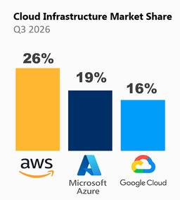
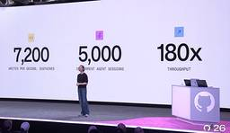
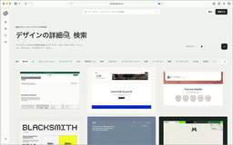
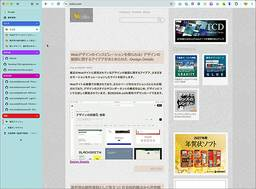

直近1週間の人気フィード
はてなブックマーク数を元に新着優先で並べ替え

Figmaを正解にアプリのUIを点検する、Claude Codeで作るUI差分検知 42
42 ZOZO TECH BLOG
ZOZO TECH BLOG
はじめに こんにちは。グローバルプロダクト開発本部 グローバルアプリ部 アプリ基盤ブロックの桂川です。普段はZOZOFIT・ZOZOMETRYなどの計測アプリのAndroid開発に携わっています。 今回、Figmaのデザインとアプリの画面の差分を検知しやすくするための仕組みづくりに取り組みました。これまで、Figmaとアプリの画面が一致しているかは、人が目で見比べて確かめるしかありませんでした。 そこで、Claude CodeのSkillを使い、AIが画像から画面の構造を読み取ってFigmaとアプリを比べ、見つかった差分をレポートにまとめる仕組みを試作しました。本記事では、この仕組みの検討内容…
1日前

クラウドインフラのシェア、AWSが26％に後退、Google Cloudは16％に上昇。クラウドインフラ市場全体は過去最大の高成長率へ。2026年第3四半期、Synergy Research 72 Publickey
調査会社のSynergy Research Groupは、グローバルにおける2026年第3四半期のクラウドインフラの市場状況について調査結果を発表しました。 クラウドインフラとは、IaaS、PaaS、ホステッドプライベートクラウドを合わせた...
3日前
GitHubで最も使われている言語は2年連続TypeScript、プルリクの増加率はRust。急成長したOSSはCC Switch、Omarchyなど。GitHub Octoverse 2026 60 Publickey
GitHubは、この1年のGitHubにおけるGitHubの利用動向やオープンソースの動向などをまとめた年次レポート「Octoverse 2026」を発表しました。 発表によると、GitHubを利用している開発者は総数2億2500万人。国別...
3日前

AIによる情報漏えいを棚卸ししてみた。 22 DevelopersIO
1,000万件を超える個人情報の漏えいが、この5か月で15件公表された。AIは外からの攻撃を速く安くし、内側には新しい漏えいの経路を増やしている。公表事例と調査をたどって棚卸しした。
2日前

Weight-Space Programming やってみた(やらせてみた) 8 Zennの「大規模言語モデル」のフィード
GPT-6 AstraにQwen3.5-0.8Bの重みを編集させることができたという論文が話題です。https://x.com/rikiyatakehi/status/2117313742891327994Xで反応を見ていると、AstraがQwenの重みを丸ごと読み込んで、その数値の意味を理解したように受け取られている場面がありました。実験でAstraがやったのは、コードを書いて対象モデルの重みや内部活性を調べ、挙動の仮説を立て、重みに変更を加えて結果を確かめることです。今回の研究について、自分の理解はこうです。「人間には不可能な能力が発見された」→ 違う「重みを直接編集でき...
13時間前

GitHubが従来比180倍のスループット性能向上を実現へ、来年初頭に。AIエージェント時代に対応。GitHub Universe 2026 42 Publickey
GitHubは、米サンフランシスコで10月28日と29日の2日間開催した年次イベント「GitHub Universe 2026」で、AIエージェント時代に対応した大幅な性能向上を実現することを明らかにしました。 性能向上はGitHubの基盤...
4日前

GitHub、より高度なコードレビューを行う「Copilot Code Review Max」発表。GitHub Universe 2026 38 Publickey
GitHubは、米サンフランシスコで10月28日と29日の2日間開催した年次イベント「GitHub Universe 2026」で、より高度なコードレビューを行う新機能「Copilot Code Review Max」を発表しました。 Gi...
4日前

新機能 AWS Continuum Code Vulnerabilitiesを使って最近の脆弱性を見つけられるのか試してみた 18 DevelopersIO
# AWS Continuum for code vulnerabilities の要約## サービス概要2026年10月23日にAWSが**Continuum for code vulnerabilities**をGA（一般提供）開始しました。本サービスは、脆弱性の発見から修正提案までをひとつのループにした統合セキュリティサービスです。スキャナー等の検出結果をコードリポジトリおよびAWS環境のコンテキストと突き合わせて「本当に悪用可能か」を見極め、隔離サンドボックス上でPoC（概念実証）を生成し、ビジネス影響度に基づいて優先度付けし、人がマージする前提の修正PRを返すことが特徴です。
2日前
GitHub、「Copilot Fusion」正式リリース。タスクに応じて最適なAIモデル選択で高性能かつ低コストに。GitHub Universe 2026 49 Publickey
GitHubは、米サンフランシスコで10月28日と29日の2日間開催した年次イベント「GitHub Universe 2026」で、新機能「GitHub Copilot Fusion」の正式リリースを発表しました。 Copilot Fusi...
5日前

Webデザインのインスピレーションを得られる！ デザインの細部に関するアイデアがまとめられた -Design Details 12 コリス
最近のWebサイトに使用されているデザインの細部に関するアイデア、さまざまなモーションをキュレーションしたサイトを紹介します。 Webサイトは業種で分類されており、さらにページ内のセクションごとにも分類されており、デザイ […]
4日前

[AWS Lambda] Web Functions は I/O 待ちの負荷で実行環境がいくつ立つのか、スロットリングまで実測してみました 3 DevelopersIO
AWS Lambda Web Functionsの実行環境スケーリングについて、I/O待ち主体の負荷で実測してみました。関数作成直後と暖めた後で環境数や429エラーの出方がどう変わるのか、maxEnvironmentsやrateLimitの上限に当たったときの挙動を確認してみた結果を共有させてください
2日前

Chromeの安定版で、待ちに待った縦方向のタブをサポート！ グループ化・アイコン化・分割化と併用するとさらに便利、Chrome 157で新しく追加された6つの機能 5 コリス
11/4アップデートされたChrome 157に追加された、CSSとUIに関する新しい機能を紹介します。 今回のアップデートで注目すべきは、待望の縦方向のタブのサポートです。今年の初めから段階的にサポートされており、よう […]
3日前

「GitHub Copilot Dreaming」発表。作業を振り返ってパーソナルメモリやガイダンスをバックグラウンドで整理、アップデート。GitHub Universe 2026 4 Publickey
GitHubは、米サンフランシスコで10月28日と29日の2日間開催した年次イベント「GitHub Universe 2026」で、新機能「GitHub Copilot Dreaming」をパブリックプレビューとして発表しました。 Copi...
3日前

OsecTに関する技術検証―ZeekとSuricataの比較からパーサー開発、性能評価まで(インターンシップ体験記) 3 NTT docomo Business Engineers' Blog
はじめに こんにちは。2026年夏のNTTドコモビジネスの現場受け入れ型インターンシップに参加した、吉永(github.com/ta-061)です。普段は、特殊環境で動作するアプリケーションの脆弱性検出に関する研究や、CTFなどのセキュリティ活動に取り組んでいます。 8月から9月にかけての2週間、NTTドコモビジネスのイノベーションセンターで、OTセキュリティサービスのOsecTに関する技術検証に取り組みました。ZeekとSuricataの取得情報を比較し、解析プラグインを開発したうえで、Raspberry Pi 5の実機で性能を評価しました。この記事では、今回取り組んだ業務の内容と、その中で…
2日前
GitHubのruleset移行時に注意したい、environment secretのブランチ保護仕様 3 株式会社ログラス テックブログのフィード
!この記事は毎週必ず記事がでるテックブログ Loglass Tech Blog Sprint の168週目の記事です！4年間連続達成まで残り44週となりました！ はじめにこんにちは。株式会社ログラスの新卒でプラットフォーム開発をしている宇都と申します。近年のプロダクト開発においては職種を越えたコラボレーションが進み、PdMやデザイナーなどエンジニア以外のメンバーがGitHub上で仕様策定やドキュメント管理に直接関わる機会が増えています。また、AIツールの普及によりコードベースへ直接コミットするハードルも下がりつつあります。多様なメンバーがリポジトリに参加するほど、それぞれ...
3日前